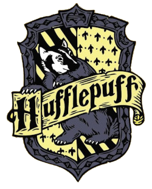

Fundador: Godrico Gryffindor
Responsável: Profª Minerva McGonagall
Cor: amarelo-ouro e vermelho
Animal: leão
Localização: 7º andar
Fantasma: Cavaleiro Nicholas de Mismy-Porpington (mais conhecido como Nick-Quase-Sem-Cabeça)
Características marcantes: coragem e determinação.
Alunos marcantes: Harry Potter, os Weasleys, Hermione Granger, Neville Longbottom, Olívio Wood, Dino Thomas, Simas Finnigan, Collin Creevey, Lilá Brown, Parvati Patil, Alvo Dumbledore, Tiago Potter, Lílian Evans, Sirius Black, Remo Lupin, Rúbeo Hagrid.
Fundador: Salazar Slyntherin Responsável: Prof. Severo Snape Cor: verde e prata Animal: cobre Localização: masmorras Fantasma: Barão Sangrento Características marcantes: astúcia e ambição. Alunos marcantes: Draco Malfoy, Vicente Crabbe, Gregório Goyle, Tom Riddle, Severo Snape, Pansy Parkinson, Blázio Zabini, Montague, Marcos Flint, Lúcio Malfoy.
Fundador: Helga Hufflepuff Responsável: Profª. Sprout Cor: amarelo e preto Animal: texugo Localização: perto da escada do Salão Principal Fantasma: Frei Gorducho Características marcantes: lealdade e companheirismo. Alunos marcantes: Cedrico Diggory, Susana Bones, Ana Abbot, Enesto McMillan, Zacharias Smith, Justino Finch-Fletchley
Fundadora: Rowena Ravenclaw Responsável: Prof. Filius Flitwick Cor: azul e bronze Animal: águia Localização: 3º andar Fantasma: Dama Cinzenta Características marcantes: inteligência e força de vontade. Alunos marcantes: Luna Lovegood, Cho Chang, Marieta Edgecombe, Miguel Corner, Rogério Daves, Padma Patil, Lisa Turbin, Terencio Boot.